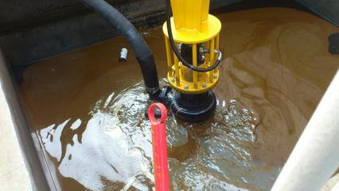

臭氧氧化机理 根据理论推导可知，化学氧化反应通过氧化作用使苯系物质、大分子量物质中键能较弱的化合键断开，生成分子量较小的物质；进而改变难生物降解的有机物的结构，使其转化为易于生物降解的物质。臭氧在水中与污染物的反应方式可划分为臭氧分子直接氧化反应（D反应）与臭氧在水中经过系列反应后分解产生的羟基自由基（•OH）的间接氧化反应（R反应）。两种反应的氧化剂不同，前者是水溶液中的O3分子，其直接氧化去除污物；后者是由O3分子在水中产生的氧化能力更强的物质即羟基自由基，间接氧化去除有机物。臭氧氧化去除有机物的反应机理见表2。根据水中臭氧氧化有机物的动力学反应方程式可知，臭氧氧化降解有机物的过程中影响因素主要有物质的性质及浓度、臭氧浓度、羟基自由基浓度等。在处理废水应用中，应考虑经济成本，以注意控制臭氧反应的影响因素，使臭氧得以有效利用。 未完，欢迎补充！
根据理论推导可知，化学氧化反应通过氧化作用使苯系物质、大分子量物质中键能较弱的化合键断开，生成分子量较小的物质；进而改变难生物降解的有机物的结构，使其转化为易于生物降解的物质。臭氧在水中与污染物的反应方式可划分为臭氧分子直接氧化反应（D反应）与臭氧在水中经过系列反应后分解产生的羟基自由基（•OH）的间接氧化反应（R反应）。两种反应的氧化剂不同，前者是水溶液中的O3分子，其直接氧化去除污物；后者是由O3分子在水中产生的氧化能力更强的物质即羟基自由基，间接氧化去除有机物。臭氧氧化去除有机物的反应机理见表2。根据水中臭氧氧化有机物的动力学反应方程式可知，臭氧氧化降解有机物的过程中影响因素主要有物质的性质及浓度、臭氧浓度、羟基自由基浓度等。在理废水应用中，应考虑经济成本，以注意控制臭氧反应的影响因素，使臭氧得以有效利用。
